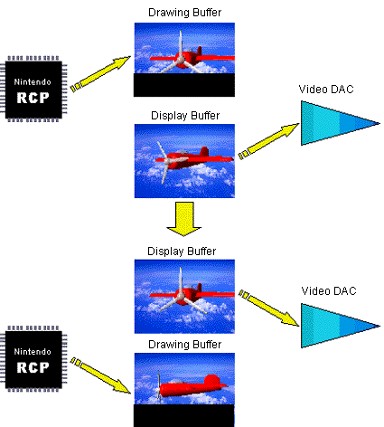
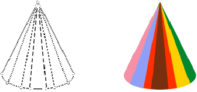

N64 accommodates two frame buffers. When one is busy displaying, the other is collecting drawing data for the next frame. This is called double-buffering. It is used to ensure smooth animation.

As shown here, because no writing is occurring in the frame buffer that is currently displaying, the N64 can display a complete image while at the same time, in the other buffer, it is writing (buffering) new display data for the next frame.
Note that the N64 does not dictate how many frame buffers you can have. You can have as many or as few frame buffers as your game application requires.
The N64 hardware is optimized for the 3D graphics process. Therefore, the 3D image drawing process automatically provides geometry conversion of the vertex information and executes the process to place the 3D object in the virtual viewing space as illustrated here:

Nintendo® Confidential
Copyright © 1999
Nintendo of America Inc. All Rights Reserved
Nintendo and N64 are registered trademarks of Nintendo
Last Updated March, 1999